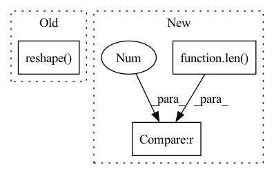

Pattern ID :953
Before Change
def forward(self, input_dict, hidden_state, seq_lens):
inputs = input_dict["obs_flat"].float()
if "conv_layer" in self.custom_config["model_arch_args"]:
x = inputs.reshape( -1, self.raw_state_dim[0], self.raw_state_dim[1], self.raw_state_dim[2]) .permute(0, 3, 1,
2)
x = self.encoder(x)
x = torch.mean(x, (2, 3))After Change
@override(ModelV2)
def forward(self, input_dict, hidden_state, seq_lens):
inputs = input_dict["obs_flat"].float()
if len(self.full_obs_space.shape) == 3 : // 3D
inputs = inputs.reshape((-1,) + self.full_obs_space.shape)
x = self.encoder(inputs)
h_in = hidden_state[0].reshape(-1, self.hidden_state_size)In pattern: SUPERPATTERN
Frequency: 4
Non-data size: 3
Instances Fragment ID: 3478721
Project Name: replicable-marl/marllib
Commit Name: b8e61fa5031b72cb8ce2321212fe3908f3468b83
Time: 2023-03-01
Author: hhhusiyi@163.com
File Name: marllib/marl/models/zoo/rnn/jointQ_rnn.py
M Class Name: JointQ_RNN
N Class Name: JointQ_RNN
M Method Name: forward(4)
N Method Name: forward(4)
M Parent Class: nn.Module,TorchModelV2
N Parent Class: nn.Module,TorchModelV2
M File Name: marllib/marl/models/zoo/rnn/jointQ_rnn.py
N File Name: marllib/marl/models/zoo/rnn/jointQ_rnn.py
M Start Line: 104
M End Line: 112
N Start Line: 57
N End Line: 60
Before Change
super().__init__()
self.shape = shape
def forward(self, input: torch.Tensor, shape):
return torch.reshape( input, self.shape)
After Change
inp_shape = torch.tensor(input.shape)
if self.initial_input_shape is None:
self.initial_input_shape = inp_shape
elif len(shape) == 2 and shape[-1] == -1:
pass
elif torch.equal(self.initial_input_shape, inp_shape):
pass
Fragment ID: 3478717
Project Name: bbuf/onnx2x
Commit Name: 1c38c809fe2ee466f62fecdf1b9a7c0730b604c8
Time: 2021-02-21
Author: 1182563586@qq.com
File Name: onnx2pytorch/operations/reshape.py
M Class Name: Reshape
N Class Name: Reshape
M Method Name: forward(3)
N Method Name: forward(3)
M Parent Class: nn.Module
N Parent Class: nn.Module
M File Name: onnx2pytorch/operations/reshape.py
N File Name: onnx2pytorch/operations/reshape.py
M Start Line: 10
M End Line: 10
N Start Line: 11
N End Line: 21
Before Change
def forward(self, input_dict, hidden_state, seq_lens):
inputs = input_dict["obs_flat"].float()
if "conv_layer" in self.custom_config["model_arch_args"]:
x = inputs.reshape( -1, self.raw_state_dim[0], self.raw_state_dim[1], self.raw_state_dim[2]) .permute(0, 3, 1, 2)
x = self.encoder(x)
x = torch.mean(x, (2, 3))
x = x.reshape(inputs.shape[0], -1)After Change
@override(ModelV2)
def forward(self, input_dict, hidden_state, seq_lens):
inputs = input_dict["obs_flat"].float()
if len(self.full_obs_space.shape) == 3 : // 3D
inputs = inputs.reshape((-1,) + self.full_obs_space.shape)
x = self.encoder(inputs)
h = hidden_state[0].reshape(-1, self.hidden_state_size) // fake a hidden state no use Fragment ID: 3478718
Project Name: replicable-marl/marllib
Commit Name: b8e61fa5031b72cb8ce2321212fe3908f3468b83
Time: 2023-03-01
Author: hhhusiyi@163.com
File Name: marllib/marl/models/zoo/mlp/jointQ_mlp.py
M Class Name: JointQ_MLP
N Class Name: JointQ_MLP
M Method Name: forward(4)
N Method Name: forward(4)
M Parent Class: nn.Module,TorchModelV2
N Parent Class: nn.Module,TorchModelV2
M File Name: marllib/marl/models/zoo/mlp/jointQ_mlp.py
N File Name: marllib/marl/models/zoo/mlp/jointQ_mlp.py
M Start Line: 104
M End Line: 111
N Start Line: 59
N End Line: 62